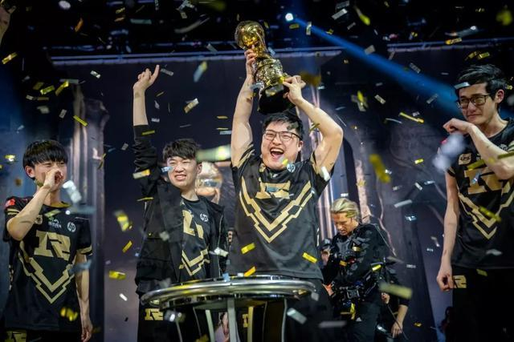

我们是冠军！回顾RNG《2018英雄联盟季中冠军赛》的夺冠之路

“小虎的马尔扎哈闪现加大招将水银腰带正在CD的霞定在原地，而Letme的奥恩同时开出大招将洛敲起，霞直接被击倒在原地。而此时KZ的维克兹站位太过靠前被奥恩击飞，Uzi的卡莎直接将其秒杀。这时候可以一波，是的！可以一波！只剩3人的KZ无法抵挡RNG的强势推进，伴随着KZ基地水晶被推掉，我们恭喜RNG赢得本届MSI冠军……”时隔三年之后，LPL再次登上MSI季中赛冠军宝座。这也是Uzi继2018 LPL春季赛总冠军之后，拿到的第二个大赛冠军。
相信不少玩家和我一样，在S7 LPL战队失利之后伤心得删掉《英雄联盟》，但却始终删不掉心中那份对《英雄联盟》的情怀。在RNG代表LPL出征本届MSI，并且豪取冠军头衔之时，我不由得从椅子上跳起来大呼“RNG NB！”这一刻，Uzi等了太久，RNG等了太久，千千万万《英雄联盟》国服的玩家也等了太久。下面就让我们一起来回顾RNG在本届英雄联盟季中冠军赛（下文简称MSI）的夺冠之路。
RNG豪取2018 LPL春季赛冠军
RNG在本届MSI的夺冠之路，其实要从RNG在LPL春季赛夺冠说起，毕竟取得LPL春季赛冠军的战队才有资格参加本届MSI。在2018 LPL春季赛开赛之前，RNG相继引入来自IG战队的上单姿态和来自FW的打野Karsa。这两手引援不仅让RNG的战术布置拥有更多的选择，而且也降低了RNG在选手状态不佳以及伤病带来的困扰。
不过在2018 LPL春季赛常规赛的前中期，由于新援与对内的其他选手磨合程度不够，RNG在采用选手轮换之后，他们的比赛成绩并不算理想。到了2018 LPL春季赛常规赛的后期，姿态和Karsa逐渐融入了RNG的战术体系，并且在接下来的比赛中大放异彩。
让人记忆犹新的是RNG在2018 LPL春季赛半决赛对阵IG的最后一场较量中，姿态拿出一手上单炼金，将IG的上单奥恩死死困在上路。而姿态的炼金则在大胆断线之后，选择入侵IG的上路野区。他不仅反掉了IG打野的两组F6，并且也将IG的上路野区点亮，从而让IG打野Ning的一举一动都暴露在RNG的视野中。
▲RNG对阵IG的最后一场比赛中，RNG上单姿态祭出炼金。
▲RNG豪取2018 LPL春季赛冠军，Uzi也获得了职业生涯中第一个大赛冠军。
一波三折，小组赛头名出线
在成功战胜EDG，豪取2018 LPL春季赛冠军之后，RNG得以顺利晋级到本届MSI小组赛，不过RNG在本届MSI小组赛的比赛过程并非一帆风顺。在小组赛第一场揭幕战中，RNG就对阵主场作战的FNC。在FNC的队员中，ADC Rekkles、中单Caps都是世界上实力顶尖的职业选手，并且Caps也在本场比赛中拿到非常克制ADC的亚索，让RNG一度陷入非常被动的局面。
当本场比赛进行到第35分钟时，选择大嘴的Uzi用大招打断了FNC正在回城的5名队员。随后RNG果断选择反打，并成功0换4赢下此次团战。最终RNG凭借此次团战的胜利，一路高歌猛进，顺利推倒FNC基地赢下揭幕战。
▲FNC五人在草丛蹲伏，结果被Uzi识破。
虽然在本届MSI小组赛的揭幕战中拔得头筹，但RNG在小组赛前三天的成绩并不算理想。在前三天的比赛中，RNG一共进行了6场比赛，战绩3胜3负。据了解，RNG在前三天的比赛发挥不佳，其中一个主要原因就是RNG的队员还没有完全将时差调整过来。不过到了小组赛的最后两天，RNG终于找回状态，并且在这两天的比赛中以全胜战绩与小组赛势头正盛的FW争夺小组头名。
在小组头名争夺战中，BP阶段Uzi拿到了目前版本中期比较强势的EZ，而MLXG为了和FW的打野男枪拼前期节奏拿出了赵信。MLXG的表现并没有让我们失望，他在比赛中帮助团队拿到了团队经济优势，并配合队友将优势扩大最终成功战胜FW，在摆脱小组赛前三天的阴霾之后，以小组头名成功晋级4强。
▲在小组赛头名争夺战中，MLXG的赵信在比赛前期帮助下路成功越塔击杀掉FW的下路二人组。
3:0“险胜” FNC，成功晋级决赛
其实在半决赛和FNC的对战中，RNG是以3:0大比分淘汰对手，那为什么要说RNG是“险胜”呢？相信看过本场比赛的朋友们还记得，RNG其实每一场比赛都赢得很艰难。例如在第一场比赛中，FNC拿到了中单岩雀、下路EZ以及打野奥拉夫这3个中前期比较强势的英雄，这也让他们在比赛中前期一度领先RNG。
不过从欧洲联赛的比赛来看，FNC并不是一支擅长中前期节奏的战队，他们打后期团战会更加得心应手。也正是因为这个原因，FNC在比赛前期拿到经济优势并且进入到游戏中期之后，他们并没有真正凭借前期的经济领先和阵容优势，将经济优势进一步扩大，反而是在游戏中期给了RNG不少机会扳回劣势。
例如当比赛进行到第21分钟时，FNC错误地选择3人抓下路的吸血鬼，但RNG的队员反应神速，瞬间传送3人进场，将FNC的3名大将轻松击杀，本场比赛胜利的天平也逐渐倾斜到RNG一方。
当比赛进入到第二场之后，双方的对战也开始进入白热化。FNC依然选择了前期阵容，并且在比赛前中期均能够在团队经济上领先RNG。不过当第二场对决进入到第29分钟之后，FNC再次做出错误的决定——在看到RNG的3名队员去下路抓己方单带的卡密尔，他们果断选择打大龙，但是Karsa的扎克发挥神勇，配合小虎的吸血鬼在跳进大龙坑之后惩戒抢下大龙，随后RNG顺利击杀FNC的4名队员。
不仅如此，在比赛进行到第40分钟的时候，FNC的卡密尔用自己的生命拖延了RNG两名队员，而FNC的其他队员选择打远古龙。在远古龙的血量所剩无几之时，Karsa的扎克再次跳入龙坑并且顺利抢下远古龙。RNG凭借远古龙BUFF和大龙BUFF进行反推，顺势击杀FNC的多名队员并成功推到FNC的基地水晶，赢下第二场比赛。
▲Karsa在本场比赛表现神勇，前后两次抢下大龙和远古巨龙。
当FNC被逼入绝境之后，他们在BP阶段仍然选出了岩雀和EZ的中前期阵容，并且出人意料地拿出了炼金上单，希望通过炼金的断线来打算RNG的中前期节奏。有趣的是，恰好这场比赛的解说嘉宾就是在 2018 LPL春季赛中，使用炼金将IG爆锤的姿态。
在解说比赛的过程中，姿态分享了自己对炼金的理解——炼金在比赛前中期应该做的事情是在断兵线之后离开线上，要么选择入侵对方野区反野，如果没有野怪可打那么就做好视野探查敌方打野的位置，或者是选择Gank中路。然而Bwipo的炼金在断兵线之后并没有频繁地入侵RNG的野区，或者做更多的事情。
用姿态的话来说就是“Bwipo的炼金玩得很正义，还不够脏”。也正是因为这一点，RNG在比赛前期通过击杀FNC的炼金拿到了不少的经济，并且成功度过了中前期的劣势局面。比赛进行到第24分钟时，RNG强抓下路单带的炼金，并在接下来的团战中0换3击败FNC，并且顺势成功拿下大龙，奠定了胜势。
▲FNC在最后一局拿出上单炼金，但Bwipo的炼金发挥并不算出色。
天王山之战：RNG VS. KZ
在KZ击败FW之后，RNG在本届MSI决赛中将要迎战的队伍最终尘埃落定。作为在小组赛以头名晋级到4强的RNG自然拥有不少优势，其中除了拥有选择半决赛选择对阵战队的资格以外，在半决赛和决赛之间还有整整一天的时间来调整状态以及准备决赛，也是一个不小的优势，这是在第二组半决赛胜出者无法享受到的。
不仅如此，RNG在赢下FNC晋级决赛之后，战队的教练组以及阿布、朱开、牛排等大佬组成的“智囊团”也有更多时间来研究决赛的打法。因此，以上优势也为RNG的最终夺冠奠定了坚实的基础。下面，我们就首先来回顾RNG对阵KZ的第一场比赛。
第一局
BP成功＋优秀发挥
首先在RNG的首发阵容方面，Karsa担任首发打野，而MLXG则作为替补打野。进入BP阶段之后，拥有选边权的RNG选择蓝色方选择了EZ搭配风女的下路组合，而KZ则拿出女警加布隆的强势组合。在这样英雄选择下，KZ想要凭借装备成型更慢的女警赢下第一局，就必须在游戏前中期以下路为核心，围绕女警制定战术，帮助己方下路尽快拿到经济优势，并迅速扩大经济优势。
然而，KZ在比赛前中期却并没有帮助女警拿到更多的经济优势。不仅如此，RNG在辅助英雄的选择上非常有灵性。风女不仅可以在线上给Uzi给予较多的保护，而且也可以给防御塔加盾，减缓女警推塔的节奏。此外，风女还可以非常有效地抵挡KZ中单刀妹和上单剑姬在团战时的进场，从而为后排提供更多的输出空间，这也是RNG赢下第一局比赛的关键之一。
说到RNG赢下第一局比赛的原因，其实KZ的视野布置不够充足也是关键原因之一，再加上RNG本局比赛选择的整容强开团能力很强，即使KZ选择131分带阵容，他们中路3人也不敢在对线RNG的3人消失之时上前查看他们的动向，因为这种做法极有可能被RNG抓住机会选择强开团。BP上的优势，队员优秀的发挥，再加上KZ的战术执行不当以及他们选手的失误，RNG在决赛的第一局轻松拿下比赛。
▲对阵KZ的第一局比赛中，RNG在辅助位选出风女非常有灵性。
第二局
下路被针对，团战失误
第二局比赛，RNG依然选择蓝色方，并且仍旧一选EZ。而LZ在吸取了第一局失败的经验之后首先变阵，将下路组合更换成维鲁斯和塔姆。不仅如此，KZ在比赛开局之时便出人意料的设计了一级团，这也让Uzi给KZ维鲁斯送上一血，并且RNG下路组合双双交出闪现。一团的劣势在接下来的比赛中产生了连锁反应，KZ打野小花生开始选择频繁照顾下路，压制Uzi在比赛前期的发育，进而导致中后期Uzi在团战中无法打出让KZ前排畏惧的伤害。不过这都只是KZ在埋下种子，而真正“开花结果”则是第二局比赛28分钟在紫色方红BUFF处爆发的团战。
在这次团战中，RNG队员站位被地形分隔开，并且KZ刀妹在RNG前排和后排之间自由穿梭，并压低Uzi EZ的血量。不仅如此，KZ刀妹在切入后排之时，小虎的加里奥匆忙交出大招保护EZ，所以大招并没有击飞更多的对手。此外，KZ上单Khan的大虫子在此次团战中挑起RNG的3名队员，让RNG在团战中的输出出现断层，输掉此次团战，并且也丢失了关键的大龙。而KZ靠着大龙BUFF的优势一路高歌猛进，最终赢下了第二局比赛。
▲KZ上单Khan的大虫子在关键时刻击飞RNG的3名队员，帮助队伍拿到团战胜利。
第三局
Karsa无处不在，KZ被打懵
首先在第三局比赛的BP方面，RNG仍然选择EZ和风女作为下路组合，而KZ的下路也没有发生变化，仍然是维鲁斯搭配塔姆。不过这一局双方的中路和上路英雄有了变化——中单小虎在刀妹、卡尔玛以及岩雀被Ban的情况下果断拿出非常拿手的吸血鬼，来对阵KZ中单BDD的赛恩。
此外，KZ在发觉Letme的奥恩发挥优秀的情况下选择Ban掉奥恩，不过这并没有对Letme造成困扰，他在最后拿出了慎对线KZ上单Khan的船长。总的来说，在阵容选择方面，RNG的上路慎、打野蝎子、中单吸血鬼这3个英雄在面对KZ的上单船长、打野巨魔以及中单赛恩时，本来在对线上是处于劣势。
不过在第三局进行到7分半左右时，RNG的打野Karsa和中单小虎联手帮助Letme越塔击杀KZ上单船长。至此，RNG的中、上、野这3个位置在英雄选择上的劣势不复存在，并且从此之后拿到不小的优势。其实，KZ在逆风局的处理不够细腻也是失败的关键因素。
在第三局比赛进行到第22分钟时，在没有足够眼位却选择单带的KZ上单船长被RNG小虎的吸血鬼直接秒杀，前来救援的KZ打野巨魔也同样遭到击杀，此时RNG顺势打掉大龙。至此，第三局比赛RNG轻松拿到胜势，凭借稳步推进，RNG最终赢下第三局比赛，并拿到两个赛点。
▲对阵KZ的第一局比赛中，Uzi的EZ打出高额伤害，并超过KZ的Pray 5倍之多。
第四局
KZ俄洛伊被针对，RNG抓住机会登顶
在逼入绝境的情况下，KZ亮出底牌，Ban掉小虎擅长的卡尔玛和吸血鬼，以及Uzi前三局都一选的EZ。然而，KZ却没有足够的Ban位来Ban掉Uzi在本届MSI比赛中大杀四方的卡莎。因此，Uzi自信一选卡莎，而KZ则拿出霞洛组合应对。另外值得注意的就是Karsa连续4局都选择了蝎子。RNG上单姿态曾表示，Karsa的蝎子是当前版本下最熟练的英雄，从前三局Karsa的表现也证明了这一点。
最后非常有意思的就是KZ拿出了俄洛伊上单和维克兹中单，加上下路的霞洛组合，KZ的阵容在中期非常强势，这也让RNG在比赛中期处于非常被动的局面。不过在第37分钟时，KZ队员终于露出破绽，接下来便出现了本文前言中的那一幕——KZ的ADC霞和中单维克兹相继被击杀，RNG直接选择一波推进，并顺利结束比赛。时隔3年之后，LPL战队再次拿到MSI冠军，Uzi也达到了自己人身中的第二个大赛冠军，同时也再次证明自己就是世界第一ADC。
▲在双方第四局比赛中，Uzi如愿拿到卡莎，并成功帮助队伍夺冠。
这不是终点，而是另一个起点
在比赛结束之后，RNG全队接受了来自世界各地媒体的采访。在被问到之后的目标是什么的时候，Uzi回答道：“接下来的目标就是希望全队的每个人都能保持良好的状态，然后好好的打下去，不要觉得这就是一个终点。”其实在看到RNG推掉KZ基地水晶时我没哭；看到RNG举起MSI冠军奖杯时我没哭，但是听到Uzi说道这段话，我不禁热泪盈眶，Uzi是真的成长了。
他从15岁成为《英雄联盟》的顶尖职业选手到现在，5年的职业生涯让他脱离了当初的稚嫩，变得更加得成熟稳健，并且也让他从当年的“狂小狗”变成了如今的Uzi。当然，RNG能多得本届MSI冠军，其他的队员也功不可没。
在2016年与MSI冠军失之交臂后，小虎的发挥越来越稳定，并且他的英雄池也逐渐加深。从本届MSI的表现我们也可以看到，无论是刀妹这种AD刺客、还是吸血鬼这种后期团战核心，小虎都能熟练运用。此外，姿态在解说半决赛时就曾提到，Karsa在当前版本最熟练的英雄就是蝎子，而他也在决赛中连选4次蝎子，并且也能将小花生压制住。
不仅如此，Karsa加入RNG才不到一个赛季就能几乎完美地融入到RNG的战术体系当中，这无疑是他不懈努力的结果。说到Karsa就不得不提MLXG，用他自己的话说：“如果说Karsa是盾，那么我就是矛”。是的，MLXG以凶悍的打野风格著称，并且解说和粉丝们也经常将“头铁”这个词和他联系在一起，在本届MSI中，MLXG虽然因为身体不适在决赛中并未上场，但是他在小组赛中的表现神勇，RNG以头名出线，他功不可没。
想到上单Letme，我不禁想起了他“众生平等型上单”这一称号，不过他的确配得上这个称号——无论面对的是哪位上单选手，Letme都能把他牢牢拖在上路，并且Letme在团战中的发挥也有不少可圈可点之处。对了，差点漏掉默默保护Uzi的辅助Ming。众所周知，Uzi是一个对辅助选手非常苛刻的ADC，想要成为Uzi的搭档并非易事。
而Ming凭借过人的天赋和深厚的英雄池，在每一场比赛中都能为Uzi保驾护航，可见他的实力也同样值得认可。希望在夺得本届MSI冠军之后，Ming能够和RNG的其他队员们一起保持良好的竞技状态，向S8总决赛冠军昂首前行，为LPL拿下第一座全球总冠军奖杯。